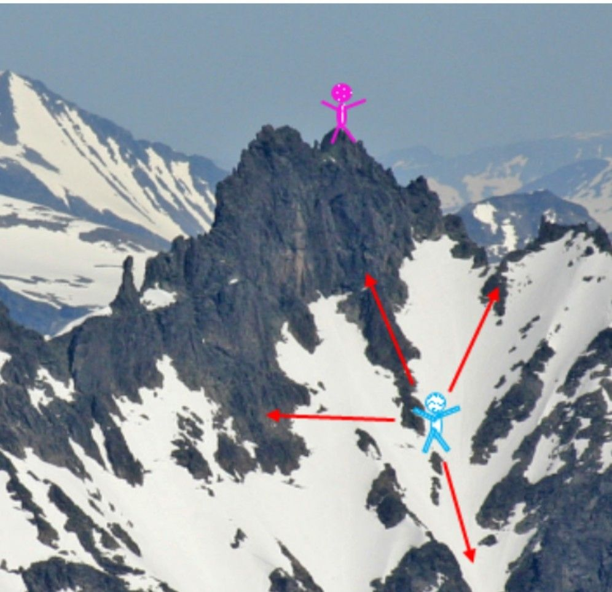

(The Smart Gradient Project)
Adam, who is blind, wants to reach his fiancée, Sarah, at the top of the mountain. He needs to compute the gradient at each point to guide his path.
Sarah becomes nervous quickly, so an accurate smart gradient is needed.
Adam can’t see the top, but he can move in steps around him and get the gradient numerically using his talking calculator.
(Let’s imagine this is an unconstrained optimization framework, where the mode of the function is the top of the mountain and a gradient needs to be computed at each point.)
Luckily, Adam uses my Smart Gradient technique to reach Sarah. Instead of using the default directions to compute gradients: (1,0,0), (0,1,0), (0,0,1) —
He uses improved directions like: (d₁₁, d₁₂, d₁₃), (d₂₁, d₂₂, d₂₃), (d₃₁, d₃₂, d₃₃).
As simple as that! It’s more efficient, more robust, and more accurate.
Sarah is happy now. See the photo 😄
Here’s the online published paper about Smart Gradient. It exploits coordinate transformation and previous descent directions to improve the accuracy of the gradient with essentially no extra cost:
Adam is Smart.
Be like Adam.